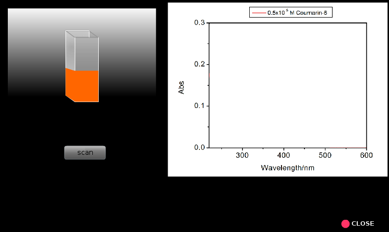
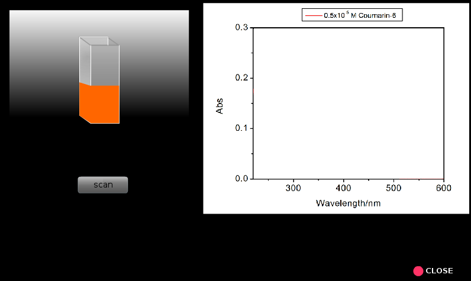

गाइड
1. प्रत्येक विश्लेषण के लिए पांच अंशांकन मानक तैयार करें:
इथेनॉल में 0.025 mM, 0.020 mM, 0.015 mM, 0.010 mM, और 0.005 mM Coumarin 343 सॉल्यूशंस और 0.020mM, 0.015 mM, 0.01 mM, 0.005 mM और 0.0025mM Coumarin 6 सॉल्यूशंस हैं।
इसके अलावा 1: 1 (1 / v / v) 0.025mM Coumarin 343 और 0.020 mM Coumarin 6 के मिश्रण का एक समाधान तैयार किया।
विश्लेषण किए जाने वाले समाधान ड्रॉप-डाउन मेनू से हटाए गए हैं। समाधान सांद्रता एकाग्रता पैमाने सलाखों से चुना जाता है।
2. कंप्यूटर और साधन शक्तियों पर स्विच करें; साधन के 'वार्म-अप' के लिए 30 मीटर की प्रतीक्षा करें।
3. साधन में एक प्रकाश स्रोतों (यूवी और दृश्यमान) का चयन कर सकता है, भट्ठा चौड़ाई, स्कैन गति और% ट्रैसमिटेंस या शोषक प्रदर्शन, ब्याज की तरंग दैर्ध्य रेंज, आदि का चयन कर सकता है।
4. एक दिए गए पथ की लंबाई के साथ दो स्वच्छ और सूखे चतुर्थांश वक्र ले लो (यहाँ हमने 1 सेमी पथ लंबाई कर्वेट का उपयोग किया है)।
5. नमूना रिक्त (वर्तमान मामले में इथेनॉल) के साथ एक क्यूरेट भरें और सबसे कम सांद्रता वाले शमशान 343 समाधान के साथ दूसरा कर्वीट।
6. संदर्भ धारक में नमूना रिक्त स्थान और नमूना धारक में नमूना रखें।
7. स्कैन (ए बनाम लैम्ब्डा) चलाएं।
8. इसी तरह कम सांद्रता से उच्च सांद्रता के लिए आगे बढ़ने वाले अन्य सभी नमूनों के लिए वर्णक्रमीय स्कैन चलाएं। हर बार समाधान से एक छोटा सा हिस्सा लेने वाले क्युवेट को कुल्ला करना चाहिए जो कि गुदा हो जाएगा।
9. Coumarin 6 समाधान के लिए चरण 5 से 8 दोहराएं।
10. मल्टीपल-कंपोनेंट सॉल्यूशन (मिक्स) सैंपल के लिए स्कैन को चलाएं, जिसमें दोनों Coumarin 343 और Coumarin 6 सॉल्यूशन हैं।
11. दोनों Coumarin 343 और coumarin के लिए अधिकतम शोषक (lambda_max) की तरंग दैर्ध्य निर्धारित करें। 6. अब तरंगदैर्ध्य का पता लगाएं, सभी समाधानों के लिए एक दिए गए lambda_max पर अवशोषण और इन डेटा युक्त एक तालिका तैयार करें।
12. अवशोषण मानों को निर्धारित करें 0f 2.5 * 10। - लंबित
13. किसी भी लैम्ब्डा_मैक्स के लिए, संबंध से अलग-अलग घटकों के अवशोषण मूल्यों के योग की गणना करें: AX + Y = (AX0 / CX0) .CX + (AY0) / CY0) .CY (e4 4 देखें)।
14. मिश्रण के मापा अवशोषक मूल्य के साथ उपरोक्त योग की तुलना करें = एक ही अधिकतम के लिए एमिक्स।
15. एक और lambda_max के लिए Amix = AX + Y realtionship की जाँच करें।
16. दो तीन तरंगदैर्ध्य (जैसे, लैम्ब्डा = 420nm और 463 एनएम) के लिए एकाग्रता बनाम साजिश रचने के द्वारा अंशांकन भूखंडों का निर्माण करें। अंशांकन भूखंडों की ढलानों को निर्धारित करें और इसलिए लैम्बडा के संबंधित मूल्यों के लिए दो अलग तरंग दैर्ध्य के लिए coumarin 343 और coumarin 6।
17. उपरोक्त दो तरंग दैर्ध्य पर 1: 1 मिश्रण के नमूने के अवशोषण मूल्यों को निर्धारित करें।
18. मिश्रण अवशोषक और लैम्ब्डा के मूल्यों का उपयोग करते हुए, दो घटक प्रणाली के लिए बीयर लैंबर्ट कानून को हल करके मिश्रण में दोनों coumarin 343 और coumarin 6 की एकाग्रता का निर्धारण करें।
19. मिश्रण बनाने के लिए लिए गए उनके मूल सांद्रता और मात्रा से मिश्रण में Coumarin 343 और coumarin 6 की वास्तविक सांद्रता की गणना करें।
20. शोषक मानों की सकारात्मकता के सिद्धांत की वैधता को सत्यापित करने के लिए मिश्रण तैयार करने के लिए ली गई वास्तविक सांद्रता से गणना की गई सांद्रता मूल्यों के साथ अवशोषण माप से निर्धारित एकाग्रता मूल्यों की तुलना करें।
21. समाधान की एक बहु-चोटी फिटिंग करें जो कि समाधान से प्राप्त की जाए जिसमें कपर्मिन 343 और कौमारिन 6 दोनों हों।
22. अपने परिणामों पर चर्चा करें।


 
